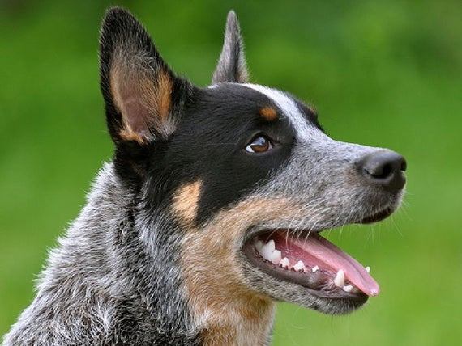

 Esta página es creada con el fin de informar acerca de la raza pastor ganadero australiano o mejor conocido como blue heeler o Australian cattle dog también como "Blueys" (azulitos), "blue dogs" (perros azules), "Heelers" (taloneros), "Queensland heelers" (taloneros de las tierras de la reina), "Blue heelers" (taloneros azules), "Red heelers" (taloneros rojos) y hasta erróneamente son llamados "Dingos". Nosotros nos dedicamos a la creacion de paginas sobre razas de perros. Los australianos son muy versátiles e incansables trabajadores que se adaptan diversas actividades. Han sido utilizados como perros de rescate y búsqueda, detectores de bombas y drogas, perros de servicio y por supuesto, pastoreo de ganado.